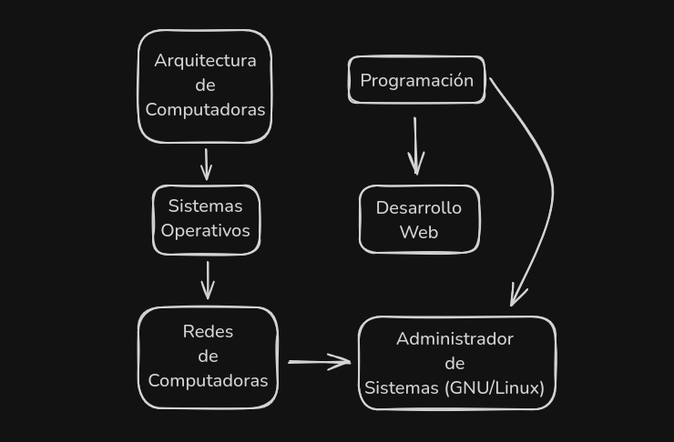

De qué se trata esto?
- Teoria y práctica sobre todo lo que tenga que ver con computadoras
- En castellano
- De la manera más rápida posible
La idea es compartir lo que he aprendido durante más de 5+ años en el mundo de la tecnología. La motivación para decidir armarlo es bastante directa y está relacionada con mi forma de aprendizaje: siempre me fue más fácil aprender algo leyendo (quizás con algunos gráficos de por medio en caso que el tema de estudio lo ameritase) que escuchar a alguien en formato docente o consumiendo algún tipo de multimedia. Toda esa consciencia no se dio de un momento para otro sino que me tomó ciertas horas perdidas en clases o frente a alguna pantalla.
Atención: aunque parezca que no pongo valoración en el rol de las personas que son profesores, no es así. Creo que tienen una enorme importancia hoy en día y es la de marcar el camino, ser las personas que guían dentro de una determinada área de conocimiento a sus discípulos. Pero la parte de presentar la información para que sea consumida ya pasó a otra etapa.
La información
Voy a ser lo más metódico y estructurado posible. Para lograr esto cada curso tendrá algunas dependencias (ya entramos en lenguaje programático?) que las dejo presentadas en el siguiente gráfico, que se irá actualizando conforme se vayan agregando cursos.

Por ejemplo para hacer el curso Redes de Computadoras, voy a suponer que ya tienen una base sobre arquitectura y sistemas operativos. Los cursos a los que no le llegan flechas comienzan de cero sin asumir conocimiento previo.
Otros recursos
A pesar de que he comenzado comentando sobre lo rápido que uno puede aprender leyendo una serie de artículos, quizás a otras personas les gustaría consumir el contenido de manera distinta. Por eso voy a tener los mismos cursos de aquí en un canal. Espero que el contenido les sea útil y disfruten el camino aprendiendo!